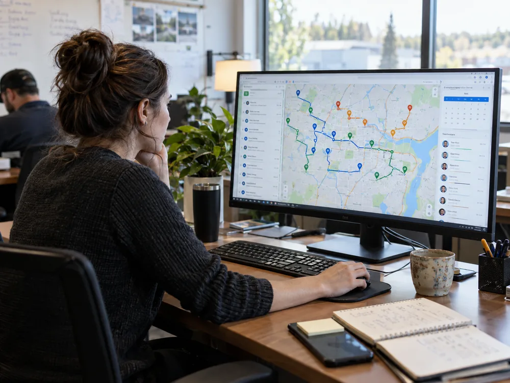

The right building
The ticket carries the unit number, the address, the access notes and where the machine room is, so nobody loses forty minutes at the sister property two blocks over.
GPS Tracker & Route Builder is route intelligence inside dispatch, not a fourth product. It runs in the dispatch module of Mobile Office Manager and on the mechanic's phone in Mobile Service, so the board, the route and the unit record are the same thing.

Routing decisions are elevator decisions. Which car is down, who is qualified on that controller, what else is due in the same building this month.
The ticket carries the unit number, the address, the access notes and where the machine room is, so nobody loses forty minutes at the sister property two blocks over.
A callback downtown and a category 1 test on the far side of the county stop being two unrelated drives. The board sequences them instead of the map deciding at noon.
When a car is down with passengers inside, dispatch can see which qualified mechanic is closest and which job can wait an hour without breaking a contract commitment.
Build the month of scheduled maintenance into routes that group units by building and neighborhood, rather than by whoever remembers the tower on 3rd.
En route, on site and complete come off the phone in Mobile Service. The office stops calling three mechanics to work out where the fourth one is.
A pin on the map is a work order on a unit, with its contract, its history and its open callbacks attached. The routing decision stays tied to the record it came from.
There is no fourth login and no second map to keep in step. Routing lives in two places you already use, over one database shared with contracts, equipment and billing.
Scheduling and dispatch are two of the nine connected modules in Mobile Office Manager. Technician location sits alongside the assignment itself, so a dispatcher can drag a callback onto the crew that can reach it and see what that move does to the rest of the day.
Because the board reads the same equipment records as the contract, a reassignment does not lose the unit history, the MCP schedule or who owns the building.
Explore Mobile Office Manager →Mobile Service gives the mechanic the day in order, with directions to the next address and the access detail that usually costs a phone call. Status flows back as each stop starts and closes.
The hoistway and the machine room are where signal goes to die, so capture keeps working offline and syncs once the mechanic is back above ground.
See Mobile Service →The same sequence runs whether it is an entrapment, a door operator fault or a test that has to be witnessed this week.
See how the three products connect →Thirty minutes with a product specialist who speaks MCP, modernization, and callbacks. No slides — your data, your scenarios.